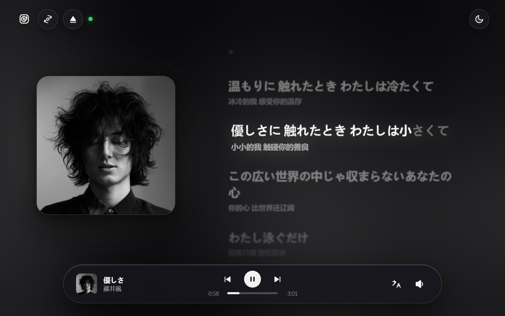
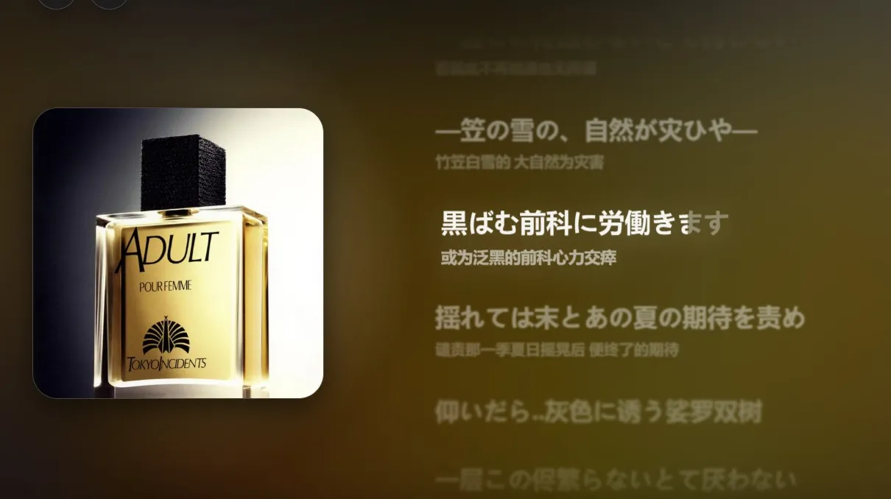
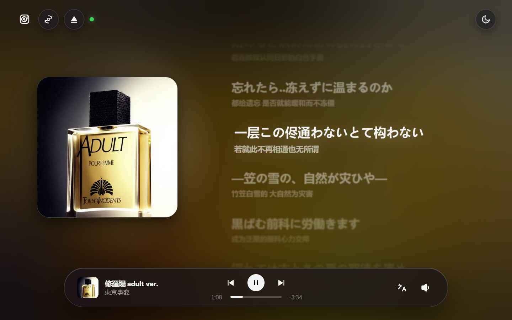
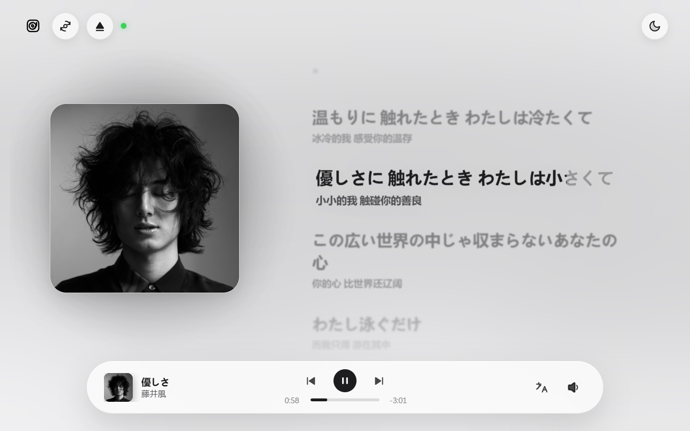
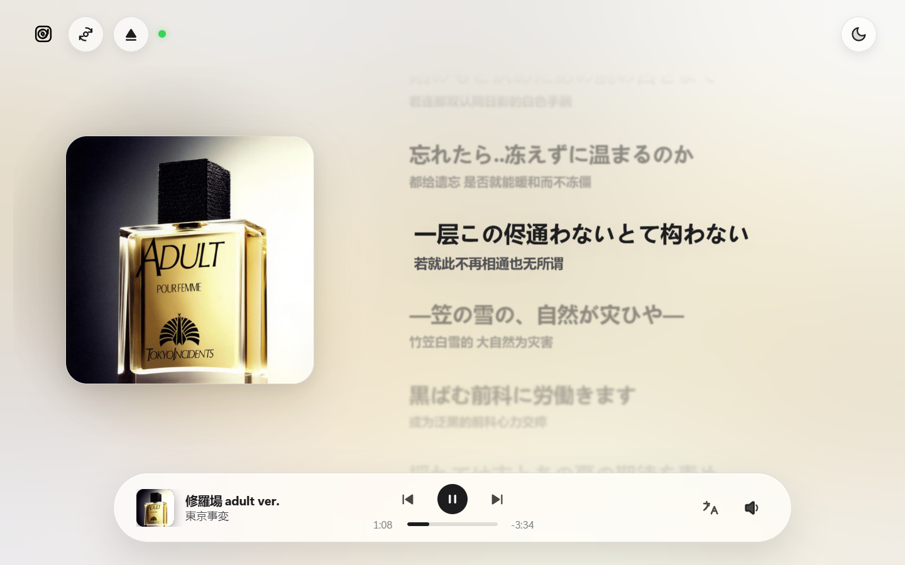
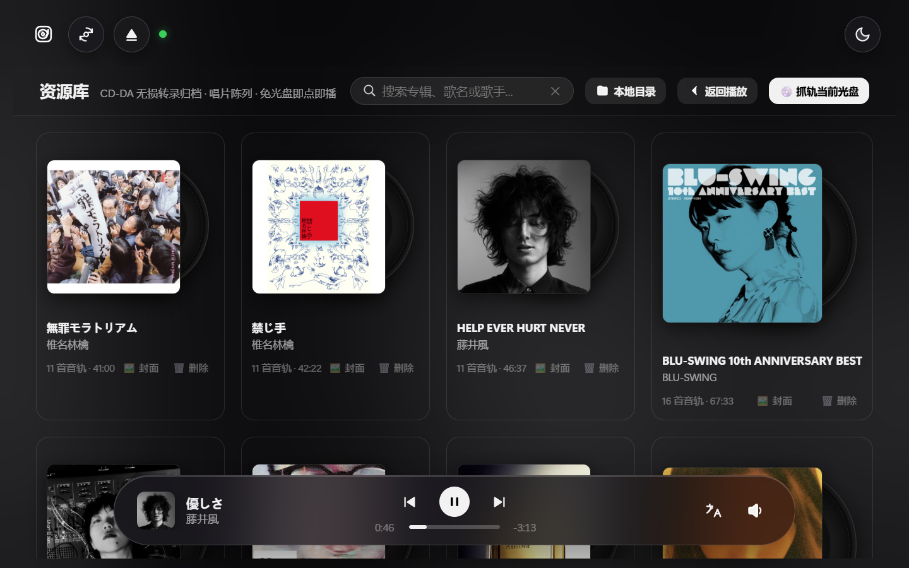
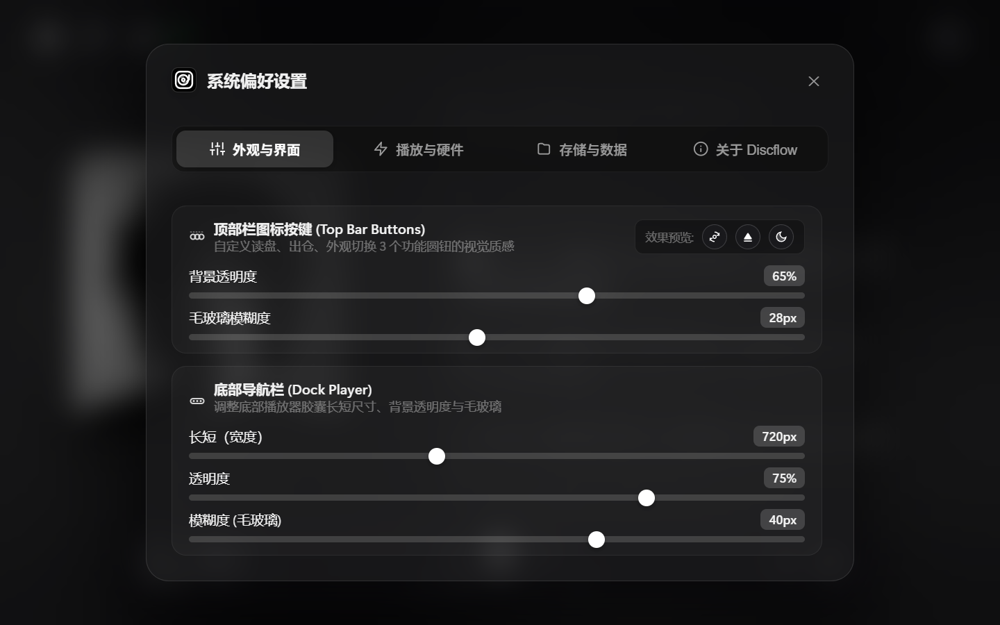

16 Bit
CD-DA 原生未压缩位深
44.1 kHz
录音棚未重采样频率
0 次
数字转码与重采样损耗
13.9 MB
单文件便携免安装
不抓轨。不压缩。
不打乱顺序。
实体唱片从第一轨到最后一轨的呼吸和段落感，不应该被流媒体算法打散。一整张专辑就是一个完整的艺术作品，放进托盘，从头听完。
逐字同步歌词
日文原文和中文
一起亮起来。
三源匹配（QQ 音乐 / iTunes / 网易云），逐字高亮。
首创音节级渐变推移，当前演唱词句前向纠偏，平滑随声滚动。

全盘联动套用
专辑识别出来，
整张的歌词一次性套用。
放入光盘毫秒级匹配艺术封面与完整音轨清单。
日中双语严密对齐，左侧大尺寸唱片封面与右侧歌词同框并存。

外观主题
深色沉浸，浅色明朗。
两套主题，同一套界面。
严格适配系统深浅外观，亦可手动随心切换。
深色模式专注如临现场，浅色模式如羊脂玉般通透温润。


本地无损资料库
抓轨归档成 WAV，
封面歌词信息全存本地。
拔掉光驱也能听。
四列自适应唱片陈列架，CD-DA 逐扇区无损转录。
整座实体唱片柜永久随身，支持整库打包迁移与即时检索。

系统偏好设置
顶栏、Dock 的透明度
与模糊度都能调。
固定 680×590 几何尺寸与滚动槽预留机制，切换四大分类毫无框体缩放或水平抽动。
高斯毛玻璃与底色透明度无级调谐，克制沉静，细节完全由你定义。
